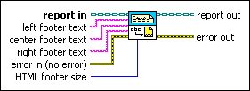

Set Report Footer Text VI
Owning Palette: Report Layout VIs
Requires: Base Development System
Sets the text of the report footer.
Use tokens with this VI to generate information in the footers. For example, you can insert a time stamp in the footers of the report.
You cannot use tokens with Microsoft Word and Excel reports.

 Add to the block diagram Add to the block diagram |
 Find on the palette Find on the palette |